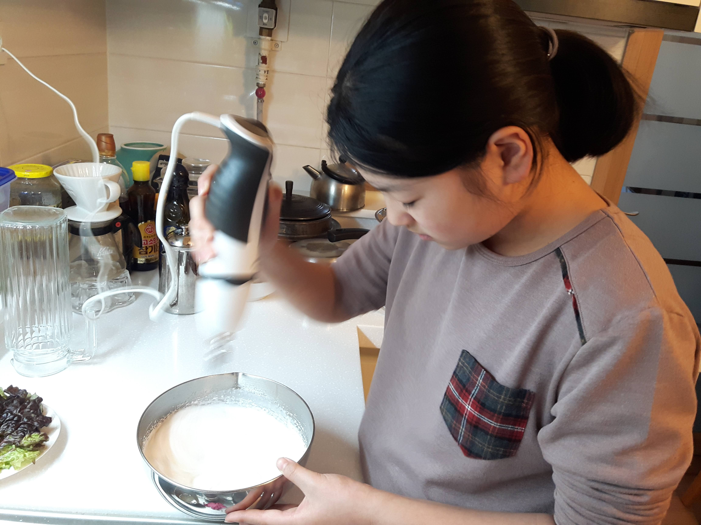

요리가 적성에 맞지 않는다고 생각 하는 사람 마저도 요리의 즐거움을 느끼면서 점점 빠져들다가 결국엔 놀라운 결과물을 보고는 점점 요리에 자신감을 자기게 될 것이다. 
까다로운 요리용어나 계량 도구로 계량하는 등의 전문적인 느낌 보다는 친구나 엄마가 자신들만의 요리법을 쉬운 말로 설명해 주는식 이어서 숟가락과 받그릇과 냄비 정도의 기본 조리 도구만 있다면 당신도 할 수 있다.